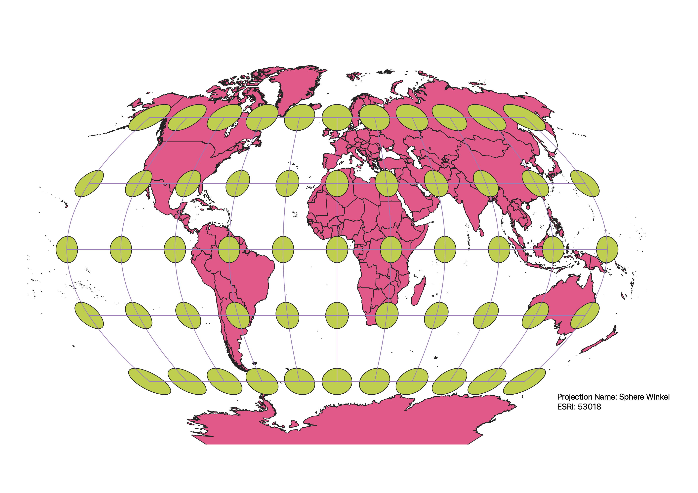
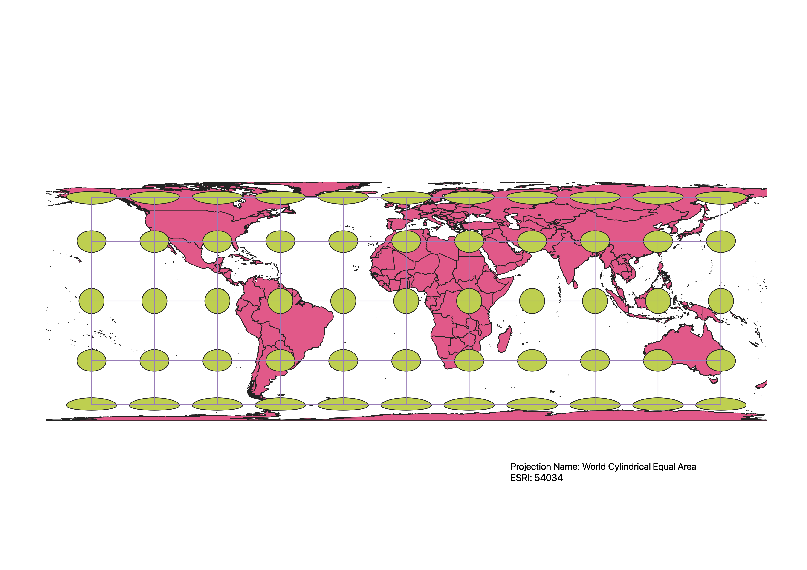
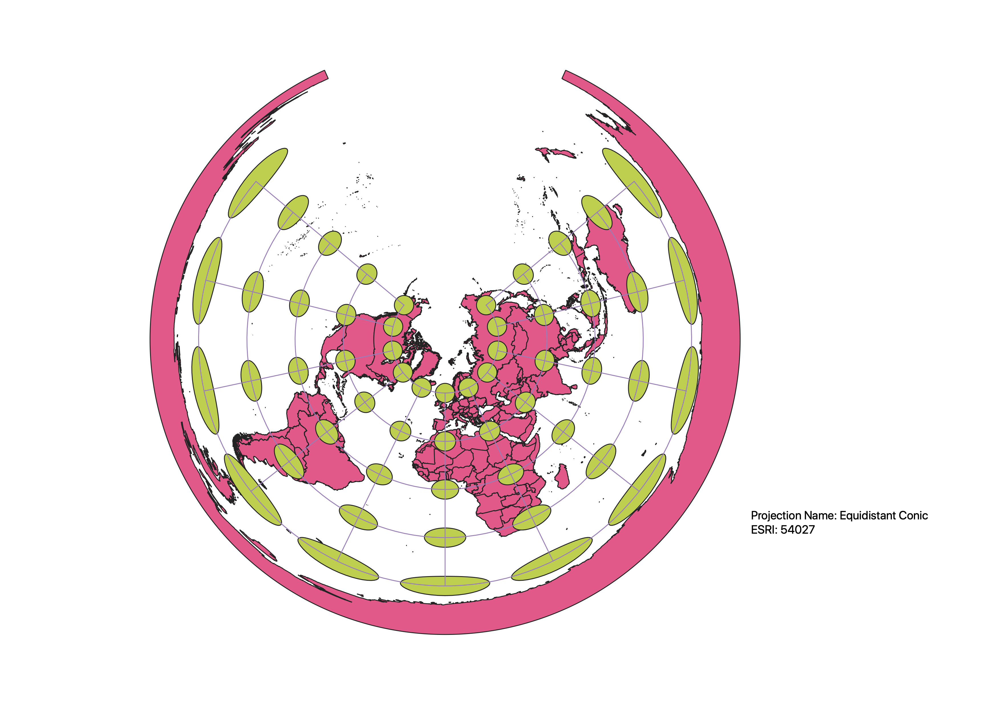
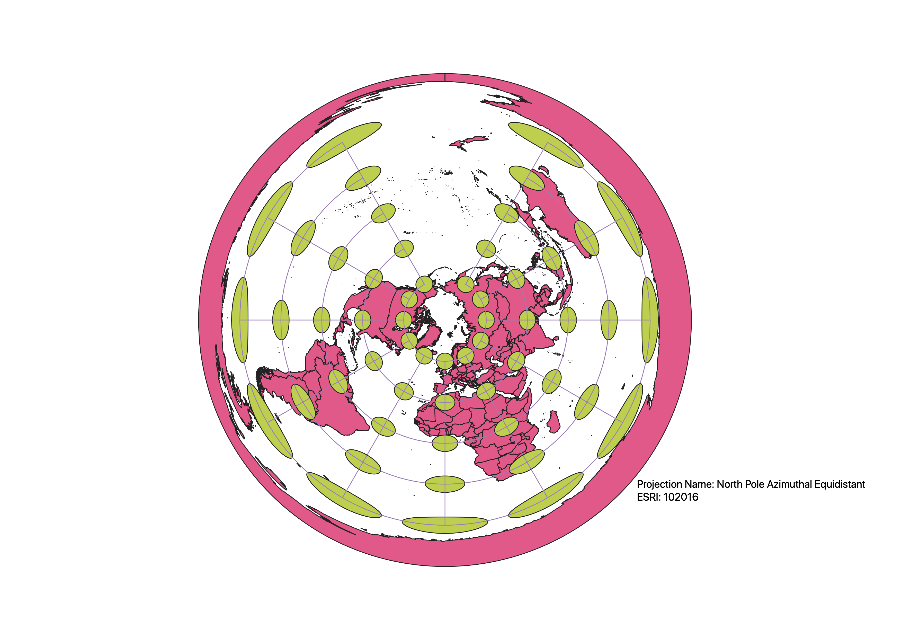
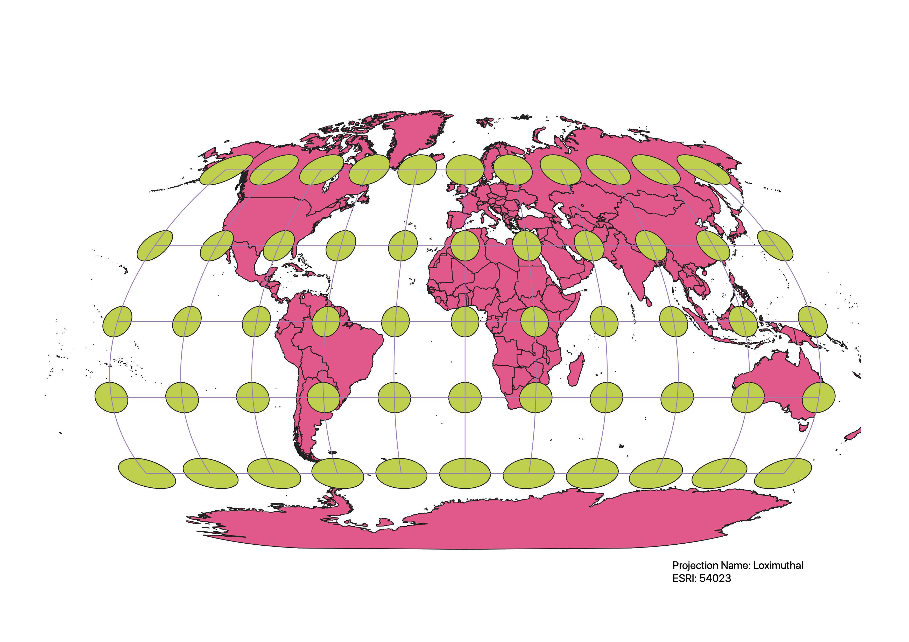
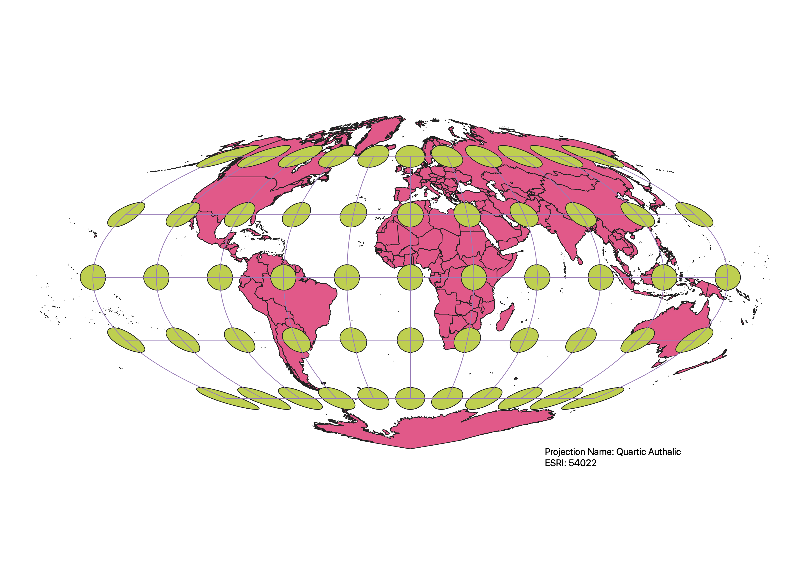

In this project I learned how to display images in different projections
To change the different projections on QGIS, the maps first had to be made. First, I started a new project on QGIS and added vectors that I had downloaded from Sakai which gave me the base map of the different countries. Next to add the projections I went to plugins to make sure I had Indicatrix mapper installed and then clicked on the application and ran it with the automatic inputs. Next in the bottom right corner it listed a EPSG: #####. Then I clicked on that and was able to search for the next EPSG, for example, I searched 53018 and clicked it then okay. I would then save the map and repeat the process by clicking the EPSG in the lower right corner and type in the new EPSG.
WGS84 Projection
The shapes of the countries dont appear to be too distorted but some distortion is possible. The circles on the graph do become distorted as you move to the poles.

Aitoff Projection
The shapes of the countries are heavily distored it appears. Additionally the the spacing and shape of the circles become distorted. The highest amount of distortion occurs at the poles.

Pseudo Mercator
The circles along the equator are not distored but as you go up or down the map to the poles they do become larger. The shapes of the countries are distorted as you go closer to the poles.

Sphere Winkel
The shapes of the countries do not appear to be that distorted in this projection. Additionally, there are some distortions of the circles mostly at the poles but they are not the distorted.

World Cylindrical Equal Area
This map is not distorted at the equator and then as you move north and south they become more destorted and are the most at the poles. The shapes of the countries are slightly distorted.

Equidistant Conic
There is heavy distortion in this map. The circles at the north pole are smaller and then get larger and more distored as you continue down the map. The shapes of the countries are also distorted.

North Pole Azimuthal Equidistnat
This map uses a circular or sphere model and there is heavy distortion of the circles. The circles get larger and more distored as you go farther away from the north pole. Also part of the map is empty because of the way it is designed. The shapes of the countries are distorted.

Loximuthal
There is some distortion of the shapes of the countries. Additionally, there the circles at the equator that are distored. Also the equators have heavily been distorted as well.

Quartic Authalic
The shapes of the countries are disorted with this projection. Additionally the size of the poles are also distored but the middle three rows of circle are similar in size. Also the shape of the map is not fully a sphere. There does not appear to be any distortion at the equator.

Data used for this project
Download Natrual Earth 1:10m Cultural Vector